Web Server Statistics for subbis.com
Web Server Statistics for subbis.com
Program started on Fri, Jan 11 2013 at 5:32 PM.
Analyzed requests from Thu, Jan 03 2013 at 9:12 AM to Fri, Jan 11 2013 at 5:06 PM (8.33 days).
Web Server Statistics for subbis.comProgram started on Fri, Jan 11 2013 at 5:32 PM.
Analyzed requests from Thu, Jan 03 2013 at 9:12 AM to Fri, Jan 11 2013 at 5:06 PM (8.33 days).
(Go To: Top | General Summary | Monthly Report | Daily Summary | Hourly Summary | Domain Report | Organization Report | Redirected Referrer Report | Failed Referrer Report | Referring Site Report | Search Word Report | Browser Report | Browser Summary | Operating System Report | Status Code Report | File Size Report | File Type Report | Directory Report | Request Report)
Figures in parentheses refer to the 7-day period ending Jan 11 2013 at 5:32 PM.
Successful requests: 937 (637)
Average successful requests per day: 112 (90)
Successful requests for pages: 84 (64)
Average successful requests for pages per day: 9 (9)
Failed requests: 143 (33)
Redirected requests: 3 (0)
Distinct files requested: 43 (20)
Distinct hosts served: 35 (2)
Data transferred: 13.52 megabytes (10.13 megabytes)
Average data transferred per day: 1.62 megabytes (1.45 megabytes)
(Go To: Top | General Summary | Monthly Report | Daily Summary | Hourly Summary | Domain Report | Organization Report | Redirected Referrer Report | Failed Referrer Report | Referring Site Report | Search Word Report | Browser Report | Browser Summary | Operating System Report | Status Code Report | File Size Report | File Type Report | Directory Report | Request Report)
Each unit ( ) represents 3 requests for pages or part thereof.
) represents 3 requests for pages or part thereof.
| month | #reqs | #pages | |
|---|---|---|---|
| Jan 2013 | 937 | 84 |    |
Busiest month: Jan 2013 (84 requests for pages).
(Go To: Top | General Summary | Monthly Report | Daily Summary | Hourly Summary | Domain Report | Organization Report | Redirected Referrer Report | Failed Referrer Report | Referring Site Report | Search Word Report | Browser Report | Browser Summary | Operating System Report | Status Code Report | File Size Report | File Type Report | Directory Report | Request Report)
Each unit () represents 1 request for a page.
| day | #reqs | #pages | |
|---|---|---|---|
| Sun | 27 | 5 | |
| Mon | 51 | 3 |  |
| Tue | 89 | 8 | |
| Wed | 57 | 9 | |
| Thu | 196 | 13 | |
| Fri | 465 | 42 |  |
| Sat | 52 | 4 | |
(Go To: Top | General Summary | Monthly Report | Daily Summary | Hourly Summary | Domain Report | Organization Report | Redirected Referrer Report | Failed Referrer Report | Referring Site Report | Search Word Report | Browser Report | Browser Summary | Operating System Report | Status Code Report | File Size Report | File Type Report | Directory Report | Request Report)
Each unit () represents 1 request for a page.
| hour | #reqs | #pages | |
|---|---|---|---|
| 0 | 0 | 0 | |
| 1 | 1 | 1 | |
| 2 | 0 | 0 | |
| 3 | 17 | 1 | |
| 4 | 17 | 1 | |
| 5 | 51 | 3 | |
| 6 | 0 | 0 | |
| 7 | 19 | 3 | |
| 8 | 18 | 1 | |
| 9 | 43 | 8 | |
| 10 | 52 | 4 | |
| 11 | 70 | 5 | |
| 12 | 35 | 3 | |
| 13 | 72 | 7 | |
| 14 | 71 | 6 | |
| 15 | 34 | 2 | |
| 16 | 212 | 26 | |
| 17 | 31 | 2 | |
| 18 | 124 | 5 | |
| 19 | 18 | 2 | |
| 20 | 0 | 0 | |
| 21 | 0 | 0 | |
| 22 | 18 | 2 | |
| 23 | 34 | 2 | |
(Go To: Top | General Summary | Monthly Report | Daily Summary | Hourly Summary | Domain Report | Organization Report | Redirected Referrer Report | Failed Referrer Report | Referring Site Report | Search Word Report | Browser Report | Browser Summary | Operating System Report | Status Code Report | File Size Report | File Type Report | Directory Report | Request Report)
Listing domains, sorted by the amount of traffic.
| #reqs | %bytes | domain |
|---|---|---|
| 937 | 100% | [unresolved numerical addresses] |
(Go To: Top | General Summary | Monthly Report | Daily Summary | Hourly Summary | Domain Report | Organization Report | Redirected Referrer Report | Failed Referrer Report | Referring Site Report | Search Word Report | Browser Report | Browser Summary | Operating System Report | Status Code Report | File Size Report | File Type Report | Directory Report | Request Report)
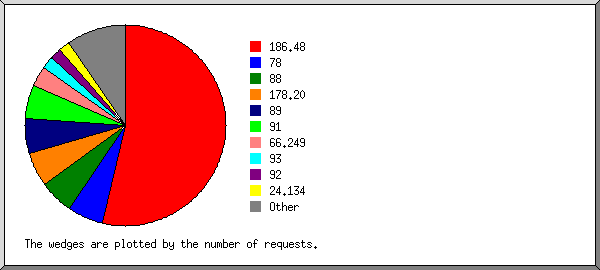
Listing organizations, sorted by the number of requests.
| #reqs | %bytes | organization |
|---|---|---|
| 502 | 34.86% | 186.48 |
| 54 | 7.52% | 78 |
| 52 | 8.13% | 88 |
| 52 | 5.39% | 178.20 |
| 52 | 8.23% | 89 |
| 51 | 8.13% | 91 |
| 31 | 5.40% | 66.249 |
| 19 | 2.98% | 93 |
| 17 | 2.71% | 92 |
| 17 | 2.71% | 24.134 |
| 17 | 2.71% | 85 |
| 17 | 2.71% | 77 |
| 17 | 2.71% | 80.153 |
| 17 | 2.71% | 87 |
| 17 | 2.71% | 217.231 |
| 2 | 0.10% | 178.32 |
| 1 | 0.10% | 74 |
| 1 | 0.10% | 69 |
| 1 | 0.10% | 5 |
(Go To: Top | General Summary | Monthly Report | Daily Summary | Hourly Summary | Domain Report | Organization Report | Redirected Referrer Report | Failed Referrer Report | Referring Site Report | Search Word Report | Browser Report | Browser Summary | Operating System Report | Status Code Report | File Size Report | File Type Report | Directory Report | Request Report)
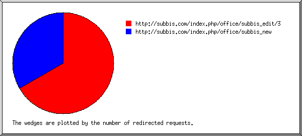
Listing referring URLs, sorted by the number of redirected requests.
| #reqs | URL |
|---|---|
| 2 | http://subbis.com/index.php/office/subbis_edit/3 |
| 1 | http://subbis.com/index.php/office/subbis_new |
(Go To: Top | General Summary | Monthly Report | Daily Summary | Hourly Summary | Domain Report | Organization Report | Redirected Referrer Report | Failed Referrer Report | Referring Site Report | Search Word Report | Browser Report | Browser Summary | Operating System Report | Status Code Report | File Size Report | File Type Report | Directory Report | Request Report)
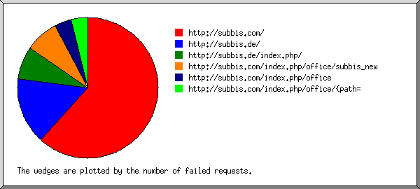
Listing referring URLs, sorted by the number of failed requests.
(Go To: Top | General Summary | Monthly Report | Daily Summary | Hourly Summary | Domain Report | Organization Report | Redirected Referrer Report | Failed Referrer Report | Referring Site Report | Search Word Report | Browser Report | Browser Summary | Operating System Report | Status Code Report | File Size Report | File Type Report | Directory Report | Request Report)
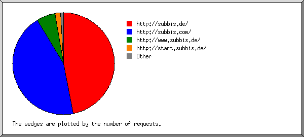
Listing referring sites, sorted by the number of requests.
| #reqs | site |
|---|---|
| 401 | http://subbis.de/ |
| 380 | http://subbis.com/ |
| 51 | http://www.subbis.de/ |
| 16 | http://start.subbis.de/ |
| 5 | http://www.google.de/ |
| 1 | http://www.google.com/ |
| 1 | http://wiki.moonchildmedia.de/ |
(Go To: Top | General Summary | Monthly Report | Daily Summary | Hourly Summary | Domain Report | Organization Report | Redirected Referrer Report | Failed Referrer Report | Referring Site Report | Search Word Report | Browser Report | Browser Summary | Operating System Report | Status Code Report | File Size Report | File Type Report | Directory Report | Request Report)
Listing query words, sorted by the number of requests.
| #reqs | search term |
|---|---|
| 4 | subbis.de |
(Go To: Top | General Summary | Monthly Report | Daily Summary | Hourly Summary | Domain Report | Organization Report | Redirected Referrer Report | Failed Referrer Report | Referring Site Report | Search Word Report | Browser Report | Browser Summary | Operating System Report | Status Code Report | File Size Report | File Type Report | Directory Report | Request Report)
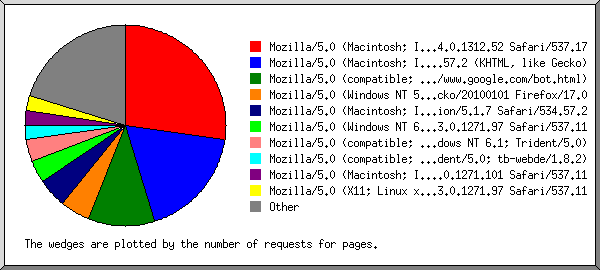
Listing browsers with at least 1 request for a page, sorted by the number of requests for pages.
| #reqs | #pages | browser |
|---|---|---|
| 173 | 23 | Mozilla/5.0 (Macintosh; Intel Mac OS X 10_6_8) AppleWebKit/537.17 (KHTML, like Gecko) Chrome/24.0.1312.52 Safari/537.17 |
| 239 | 15 | Mozilla/5.0 (Macintosh; Intel Mac OS X 10_6_8) AppleWebKit/534.57.2 (KHTML, like Gecko) |
| 25 | 9 | Mozilla/5.0 (compatible; Googlebot/2.1; +http://www.google.com/bot.html) |
| 68 | 4 | Mozilla/5.0 (Windows NT 5.1; rv:17.0) Gecko/20100101 Firefox/17.0 |
| 72 | 4 | Mozilla/5.0 (Macintosh; Intel Mac OS X 10_6_8) AppleWebKit/534.57.2 (KHTML, like Gecko) Version/5.1.7 Safari/534.57.2 |
| 51 | 3 | Mozilla/5.0 (Windows NT 6.1; WOW64) AppleWebKit/537.11 (KHTML, like Gecko) Chrome/23.0.1271.97 Safari/537.11 |
| 36 | 3 | Mozilla/5.0 (compatible; MSIE 9.0; Windows NT 6.1; Trident/5.0) |
| 18 | 2 | Mozilla/5.0 (compatible; MSIE 9.0; Windows NT 6.1; Win64; x64; Trident/5.0; tb-webde/1.8.2) |
| 18 | 2 | Mozilla/5.0 (Macintosh; Intel Mac OS X 10_6_8) AppleWebKit/537.11 (KHTML, like Gecko) Chrome/23.0.1271.101 Safari/537.11 |
| 18 | 2 | Mozilla/5.0 (X11; Linux x86_64) AppleWebKit/537.11 (KHTML, like Gecko) Chrome/23.0.1271.97 Safari/537.11 |
| 19 | 2 | Mozilla/5.0 (Windows NT 5.1; rv:5.0.1) Gecko/20100101 Firefox/5.0.1 |
| 17 | 1 | Mozilla/5.0 (Windows NT 5.1; rv:6.0) Gecko/20100101 Firefox/6.0 |
| 17 | 1 | Mozilla/5.0 (Windows NT 6.1; rv:17.0) Gecko/20100101 Firefox/17.0 |
| 17 | 1 | Mozilla/5.0 (Macintosh; U; Intel Mac OS X 10_5_8; de-de) AppleWebKit/533.21.1 (KHTML, like Gecko) Version/5.0.5 Safari/533.21.1 |
| 1 | 1 | Mozilla/5.0 (Windows NT 6.1; WOW64; rv:7.0.1) Gecko/20100101 Firefox/7.0.1 |
| 1 | 1 | Mozilla/3.0 (compatible; Indy Library) |
| 17 | 1 | Mozilla/5.0 (Windows NT 6.1; rv:18.0) Gecko/20100101 Firefox/18.0 |
| 1 | 1 | Mozilla/5.0 (X11; Linux i686; rv:6.0) Gecko/20100101 Firefox/6.0 |
| 1 | 1 | Mozilla/5.0 (X11; U; Linux i686; en-US; rv:1.7.5) Gecko/20041107 Firefox/1.0 |
| 17 | 1 | Mozilla/5.0 (Macintosh; Intel Mac OS X 10_7_5) AppleWebKit/536.26.17 (KHTML, like Gecko) Version/6.0.2 Safari/536.26.17 |
| 1 | 1 | Mozilla/4.0 (compatible; MSIE 6.0; Windows 98; Win 9x4.90) |
| 17 | 1 | Mozilla/5.0 (iPad; CPU OS 6_0_1 like Mac OS X) AppleWebKit/536.26 (KHTML, like Gecko) Version/6.0 Mobile/10A523 Safari/8536.25 |
| 52 | 1 | Mozilla/5.0 (Windows NT 5.1) AppleWebKit/534.30 (KHTML, like Gecko) Chrome/12.0.742.100 Safari/534.30 |
| 1 | 1 | Opera/9.80 (Windows NT 6.1; U; en) Presto/2.6.31 Version/10.70 |
| 17 | 1 | Mozilla/5.0 (Windows NT 6.1; WOW64; rv:17.0) Gecko/20100101 Firefox/17.0 |
| 17 | 1 | Mozilla/5.0 (compatible; MSIE 9.0; Windows NT 6.1; Win64; x64; Trident/5.0) |
| 6 | 0 | [not listed: 1 browser] |
(Go To: Top | General Summary | Monthly Report | Daily Summary | Hourly Summary | Domain Report | Organization Report | Redirected Referrer Report | Failed Referrer Report | Referring Site Report | Search Word Report | Browser Report | Browser Summary | Operating System Report | Status Code Report | File Size Report | File Type Report | Directory Report | Request Report)
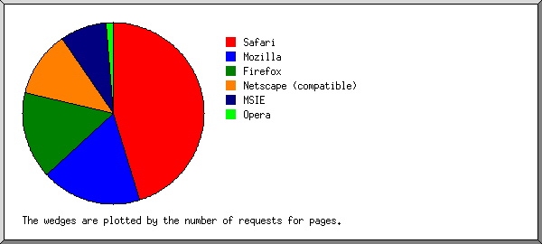
Listing browsers with at least 1 request for a page, sorted by the number of requests for pages.
| # | #reqs | #pages | browser |
|---|---|---|---|
| 1 | 435 | 38 | Safari |
| 260 | 30 | Safari/537 | |
| 124 | 5 | Safari/534 | |
| 17 | 1 | Safari/536 | |
| 17 | 1 | Safari/8536 | |
| 17 | 1 | Safari/533 | |
| 2 | 239 | 15 | Mozilla |
| 3 | 158 | 13 | Firefox |
| 102 | 6 | Firefox/17 | |
| 19 | 2 | Firefox/5 | |
| 18 | 2 | Firefox/6 | |
| 1 | 1 | Firefox/1 | |
| 17 | 1 | Firefox/18 | |
| 1 | 1 | Firefox/7 | |
| 4 | 26 | 10 | Netscape (compatible) |
| 5 | 72 | 7 | MSIE |
| 71 | 6 | MSIE/9 | |
| 1 | 1 | MSIE/6 | |
| 6 | 1 | 1 | Opera |
| 1 | 1 | Opera/9 | |
| 6 | 0 | [not listed: 1 browser] |
(Go To: Top | General Summary | Monthly Report | Daily Summary | Hourly Summary | Domain Report | Organization Report | Redirected Referrer Report | Failed Referrer Report | Referring Site Report | Search Word Report | Browser Report | Browser Summary | Operating System Report | Status Code Report | File Size Report | File Type Report | Directory Report | Request Report)
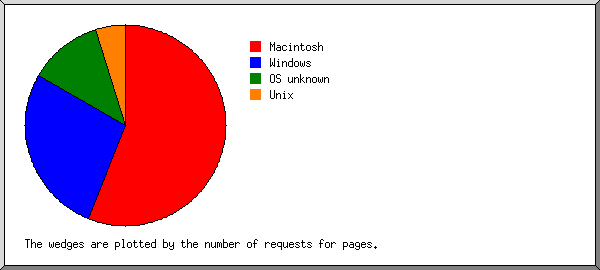
Listing operating systems, sorted by the number of requests for pages.
| # | #reqs | #pages | OS |
|---|---|---|---|
| 1 | 553 | 47 | Macintosh |
| 2 | 332 | 23 | Windows |
| 175 | 14 | Unknown Windows | |
| 156 | 8 | Windows XP | |
| 1 | 1 | Windows 98 | |
| 3 | 26 | 10 | OS unknown |
| 4 | 20 | 4 | Unix |
| 20 | 4 | Linux | |
| 5 | 6 | 0 | Known robots |
(Go To: Top | General Summary | Monthly Report | Daily Summary | Hourly Summary | Domain Report | Organization Report | Redirected Referrer Report | Failed Referrer Report | Referring Site Report | Search Word Report | Browser Report | Browser Summary | Operating System Report | Status Code Report | File Size Report | File Type Report | Directory Report | Request Report)
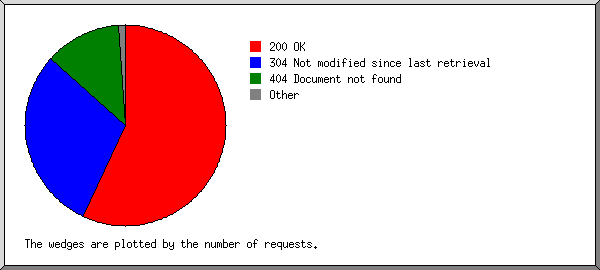
Listing status codes, sorted numerically.
| #reqs | status code |
|---|---|
| 616 | 200 OK |
| 3 | 302 Document found elsewhere |
| 321 | 304 Not modified since last retrieval |
| 1 | 400 Bad request |
| 134 | 404 Document not found |
| 8 | 500 Internal server error |
(Go To: Top | General Summary | Monthly Report | Daily Summary | Hourly Summary | Domain Report | Organization Report | Redirected Referrer Report | Failed Referrer Report | Referring Site Report | Search Word Report | Browser Report | Browser Summary | Operating System Report | Status Code Report | File Size Report | File Type Report | Directory Report | Request Report)

| size | #reqs | %bytes |
|---|---|---|
| 0 | 326 | |
| 1B- 10B | 0 | |
| 11B- 100B | 1 | |
| 101B- 1kB | 5 | 0.01% |
| 1kB- 10kB | 342 | 9.02% |
| 10kB-100kB | 229 | 31.38% |
| 100kB- 1MB | 34 | 59.60% |
(Go To: Top | General Summary | Monthly Report | Daily Summary | Hourly Summary | Domain Report | Organization Report | Redirected Referrer Report | Failed Referrer Report | Referring Site Report | Search Word Report | Browser Report | Browser Summary | Operating System Report | Status Code Report | File Size Report | File Type Report | Directory Report | Request Report)
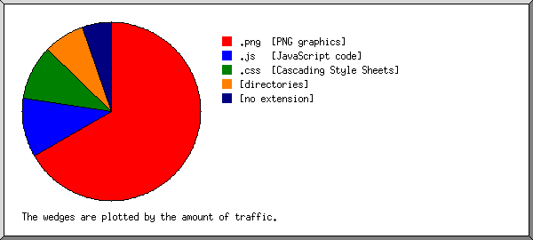
Listing extensions with at least 0.1% of the traffic, sorted by the amount of traffic.
| #reqs | %bytes | extension |
|---|---|---|
| 417 | 66.58% | .png [PNG graphics] |
| 240 | 10.69% | .js [JavaScript code] |
| 168 | 10.05% | .css [Cascading Style Sheets] |
| 84 | 7.42% | [directories] |
| 24 | 5.27% | [no extension] |
| 4 | [not listed: 1 extension] |
(Go To: Top | General Summary | Monthly Report | Daily Summary | Hourly Summary | Domain Report | Organization Report | Redirected Referrer Report | Failed Referrer Report | Referring Site Report | Search Word Report | Browser Report | Browser Summary | Operating System Report | Status Code Report | File Size Report | File Type Report | Directory Report | Request Report)
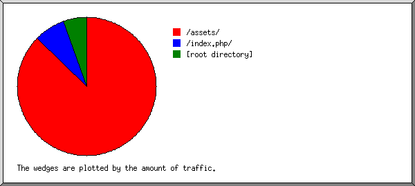
Listing directories with at least 0.01% of the traffic, sorted by the amount of traffic.
| #reqs | %bytes | directory |
|---|---|---|
| 825 | 87.31% | /assets/ |
| 46 | 7.18% | /index.php/ |
| 66 | 5.51% | [root directory] |
(Go To: Top | General Summary | Monthly Report | Daily Summary | Hourly Summary | Domain Report | Organization Report | Redirected Referrer Report | Failed Referrer Report | Referring Site Report | Search Word Report | Browser Report | Browser Summary | Operating System Report | Status Code Report | File Size Report | File Type Report | Directory Report | Request Report)
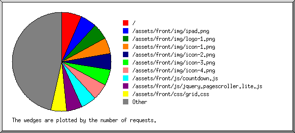
Listing files with at least 20 requests, sorted by the number of requests.
| #reqs | %bytes | last time | file |
|---|---|---|---|
| 62 | 5.51% | Jan/11/13 4:34 PM | / |
| 50 | 57.85% | Jan/11/13 5:06 PM | /assets/front/img/ipad.png |
| 49 | 3.11% | Jan/11/13 5:06 PM | /assets/front/img/logo-1.png |
| 49 | 0.72% | Jan/11/13 5:06 PM | /assets/front/img/icon-1.png |
| 49 | 0.72% | Jan/11/13 5:06 PM | /assets/front/img/icon-2.png |
| 49 | 0.71% | Jan/11/13 5:06 PM | /assets/front/img/icon-3.png |
| 49 | 0.75% | Jan/11/13 5:06 PM | /assets/front/img/icon-4.png |
| 48 | 0.51% | Jan/11/13 5:06 PM | /assets/front/js/countdown.js |
| 48 | 0.70% | Jan/11/13 5:06 PM | /assets/front/js/jquery.pagescroller.lite.js |
| 48 | 1.14% | Jan/11/13 5:06 PM | /assets/front/css/grid.css |
| 48 | 5.33% | Jan/11/13 5:06 PM | /assets/front/js/jquery.prettyPhoto.js |
| 48 | 4.21% | Jan/11/13 5:06 PM | /assets/front/css/prettyPhoto.css |
| 48 | 2.86% | Jan/11/13 5:06 PM | /assets/front/css/base.css |
| 48 | 1.03% | Jan/11/13 5:06 PM | /assets/front/js/custom.js |
| 38 | 1.33% | Jan/11/13 4:32 PM | /assets/front/img/sprite-social.png |
| 38 | 0.38% | Jan/11/13 4:32 PM | /assets/front/img/arrow.png |
| 38 | 0.81% | Jan/11/13 4:32 PM | /assets/front/img/bg-countdown.png |
| 21 | 1.75% | Jan/11/13 5:06 PM | /index.php/ |
| 109 | 10.58% | Jan/11/13 4:56 PM | [not listed: 22 files] |